Rajasthan's leading super-specialty hospital for Direct Anterior Approach (DAA) Hip Replacement, Fast-Track Subvastus Knee Arthroplasty, and Keyhole Arthroscopy spearheaded by Dr. Naveen Sharma (MS Ortho KEM Mumbai, Ex-AIIMS New Delhi, ISAKOS Germany Fellow).
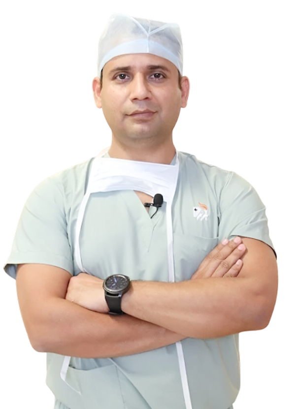
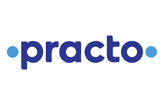
99% Patient Recommendation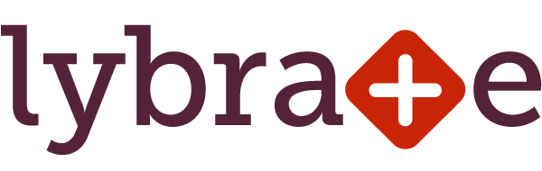
Top Orthopedic HospitalAdvance Orthopedic & Sports Injury Hospital (AOSIH) is Rajasthan's premier tertiary orthopedic hospital spearheaded by Dr. Naveen Sharma (MS Ortho KEM Mumbai, Ex-AIIMS New Delhi, ISAKOS Fellow Germany). The hospital specializes in true muscle-sparing Direct Anterior Approach (DAA) Hip Replacement, Fast-Track Subvastus Knee Arthroplasty, and 4K Arthroscopic Keyhole Ligament Reconstruction, achieving same-day walking within 4 hours and zero muscle detachment.
At AOSIH, we specialize exclusively in joint reconstruction, muscle-preserving arthroplasty, and keyhole sports arthroscopy utilizing internationally proven clinical protocols.
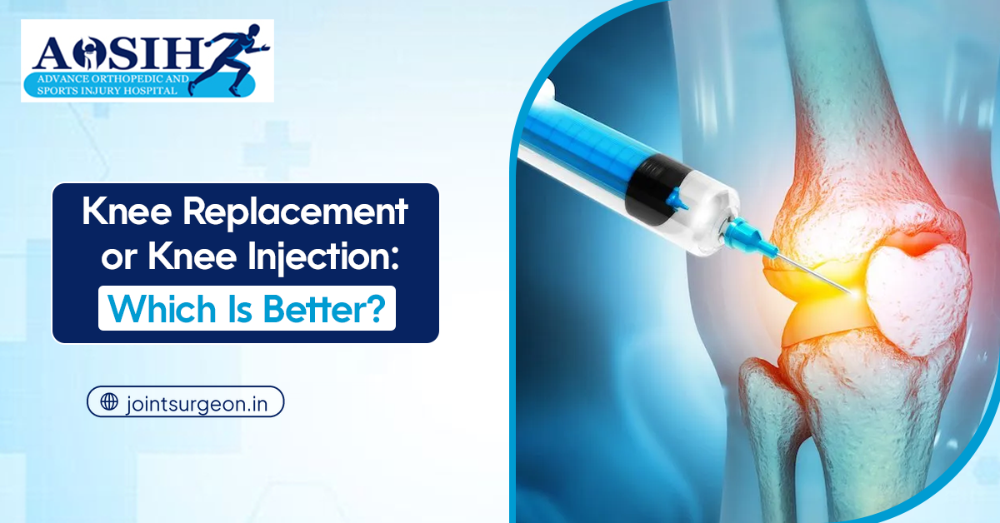
Subvastus muscle-sparing knee arthroplasty preserving natural quadriceps tendon. Walk without walker support within days with near-zero blood loss.
Learn About Knee Replacement
True muscle-sparing hip replacement from the front without cutting muscles or tendons. No dislocation precautions, smaller bikini incision, walk in 4 hours.
Explore DAA Hip Surgery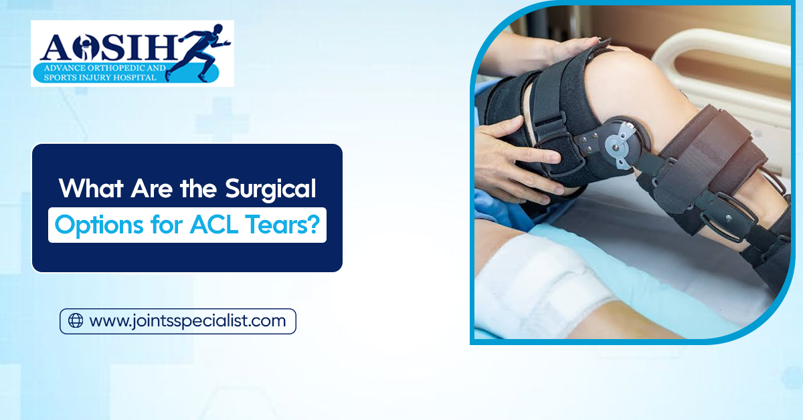
Minimally invasive keyhole arthroscopy for ACL/PCL tears, meniscus preservation, and cartilage repair. Rapid return to competitive sports and running.
Knee Arthroscopy Details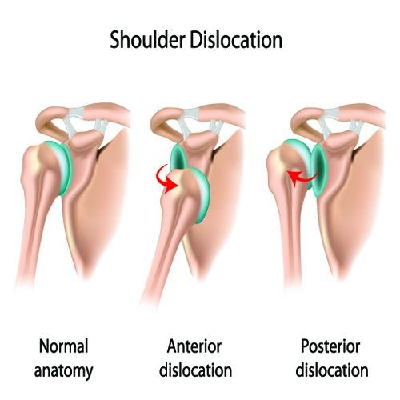
Arthroscopic double-row rotator cuff repair, Bankart labral repair, and Latarjet coracoid transfer for recurrent shoulder dislocation and bone loss.
View Shoulder Treatments
Stage-specific treatment for Avascular Necrosis (AVN) of femoral head: early core decompression with stem cells or definitive Direct Anterior hip arthroplasty.
AVN Care Protocols
Supervised postoperative physical therapy, sports biomechanics assessment, muscle strengthening, and gait re-education ensuring optimal long-term outcomes.
Rehabilitation ProgramEngineered to global hospital standards to ensure maximum surgical precision, zero infection risk, and supreme patient comfort at AOSIH.

Equipped with vertical laminar airflow, HEPA filtration, and touchless surgical controls maintaining an ultra-sterile zone for zero implant infection.

Karl Storz Germany endoscopy systems delivering ultra-crisp visualization of knee, shoulder, and hip joint cavities for millimeter-level precision.
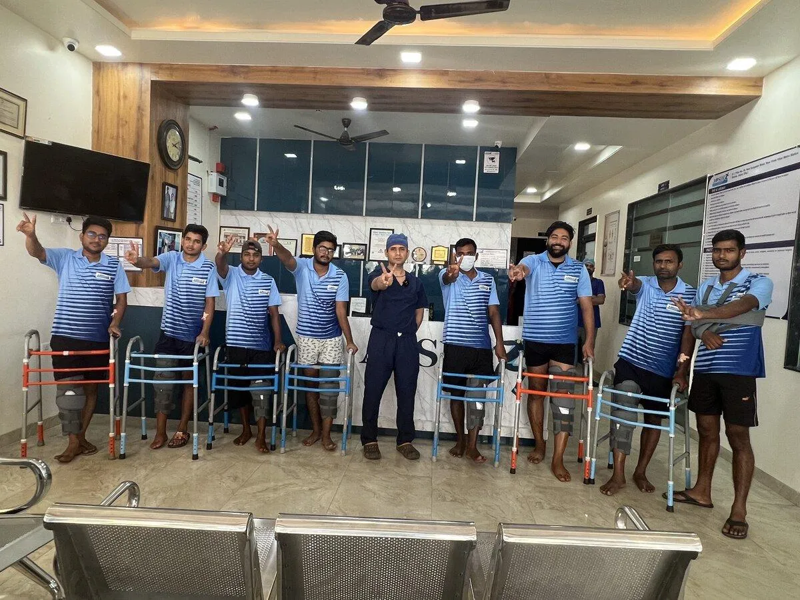
In-house high-resolution MRI, CT scan, and high-frequency digital radiography for pre-operative 3D surgical templating and implant alignment.
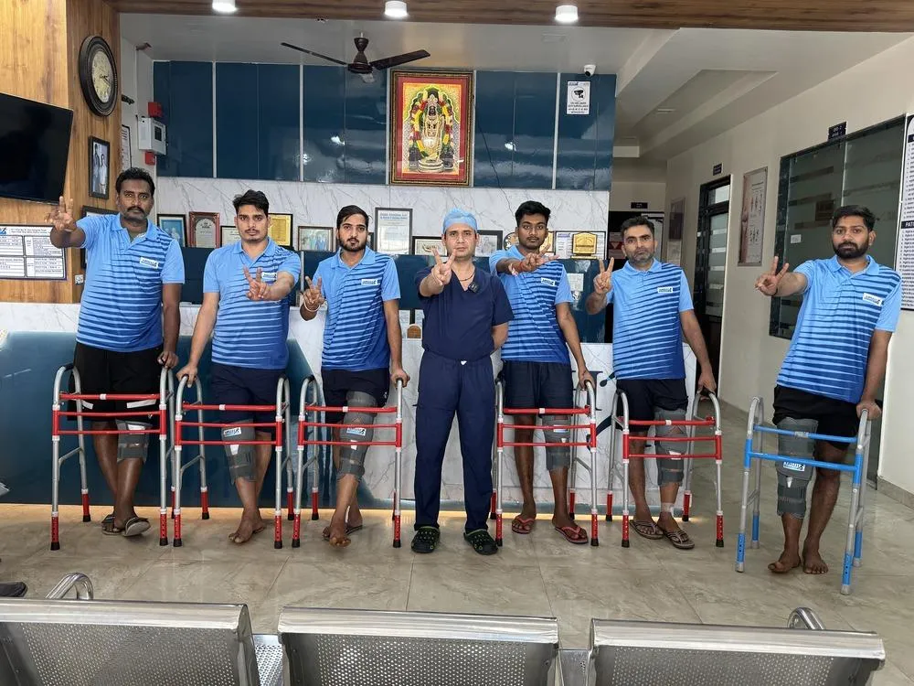
Multi-parameter monitoring, regional ultrasound-guided nerve blocks for complete pain relief, and highly trained orthopedic scrub nurses.

Hygienic private air-conditioned suites with specialized orthopedic bedding, caregiver amenities, and 24-hour dedicated clinical monitoring.
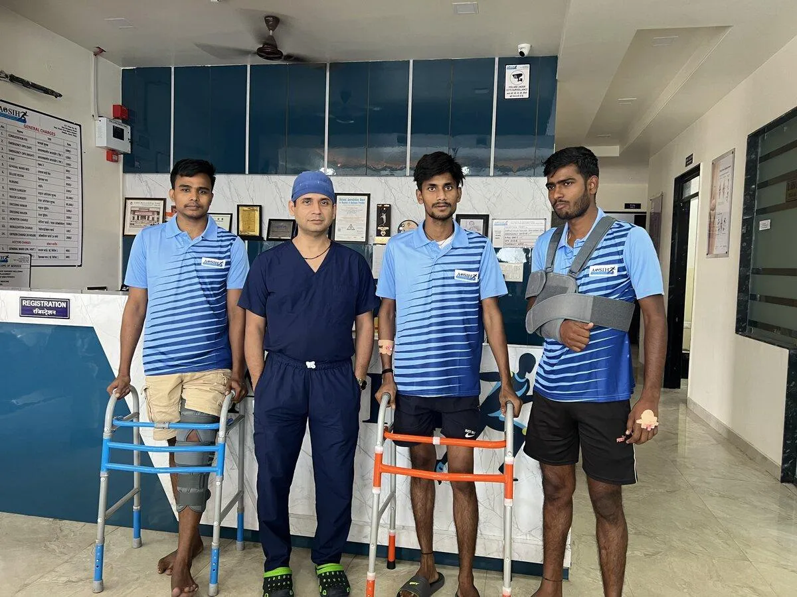
Dedicated hospital insurance desk assisting with pre-authorization across 30+ TPAs, government health schemes, and 0% interest EMI options.

MBBS, MS (Orthopedics) — KEM Hospital & Seth G.S. Medical College, Mumbai
Dr. Naveen Sharma is one of Western India's most accomplished joint replacement and arthroscopic surgeons with over 21 years of surgical tenure. Following his post-graduation from Mumbai's prestigious KEM Hospital, he served as Senior Resident at AIIMS (New Delhi) and completed advanced international fellowships in Germany (ISAKOS Fellow) and South Korea.
As Director of Advance Orthopedic & Sports Injury Hospital (AOSIH), Dr. Sharma pioneered the Direct Anterior Approach (DAA) Hip Replacement in Rajasthan, restoring pain-free mobility to over 20,000 patients spanning athletes, working professionals, and elderly citizens.
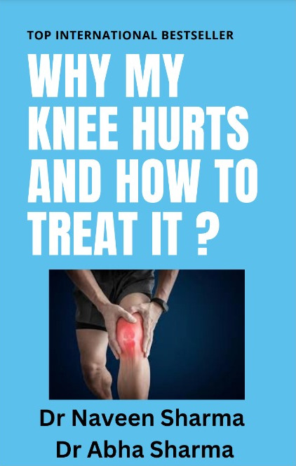
Authored by Dr. Naveen Sharma on fast-track recovery and subvastus muscle preservation.

Comprehensive clinical monograph on the Direct Anterior Approach and AVN management.
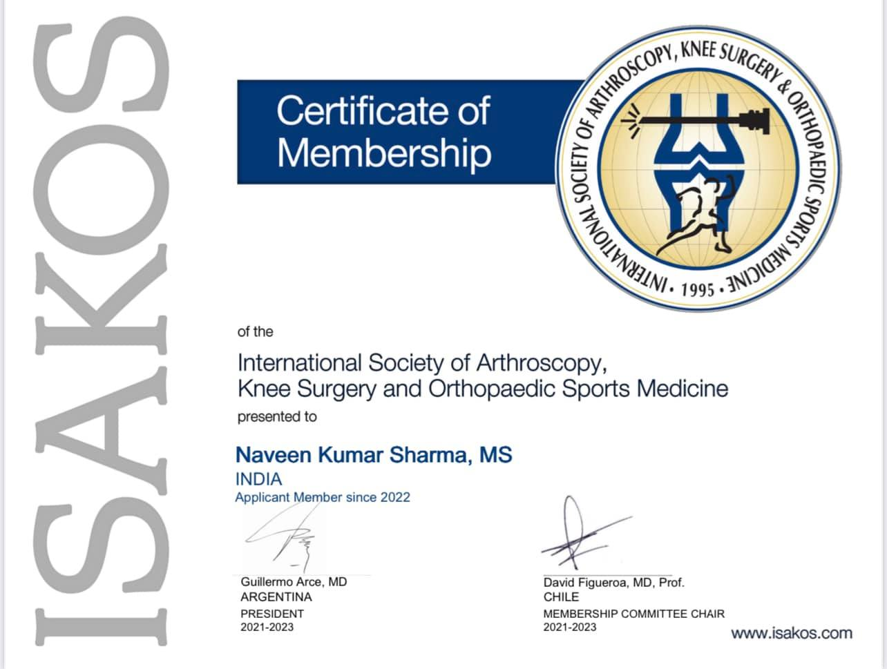
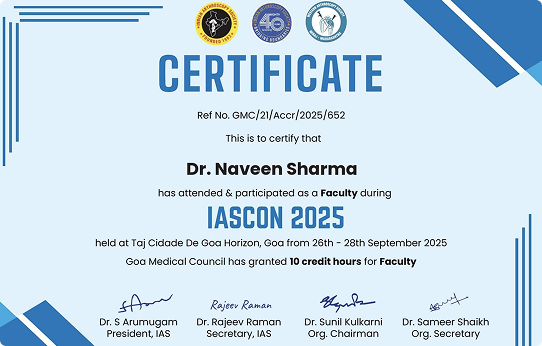
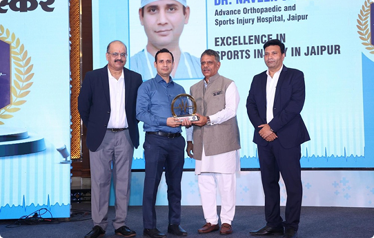
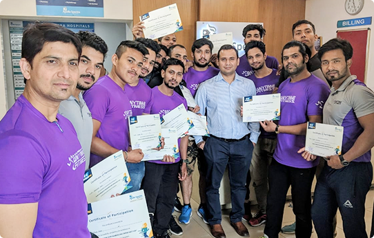
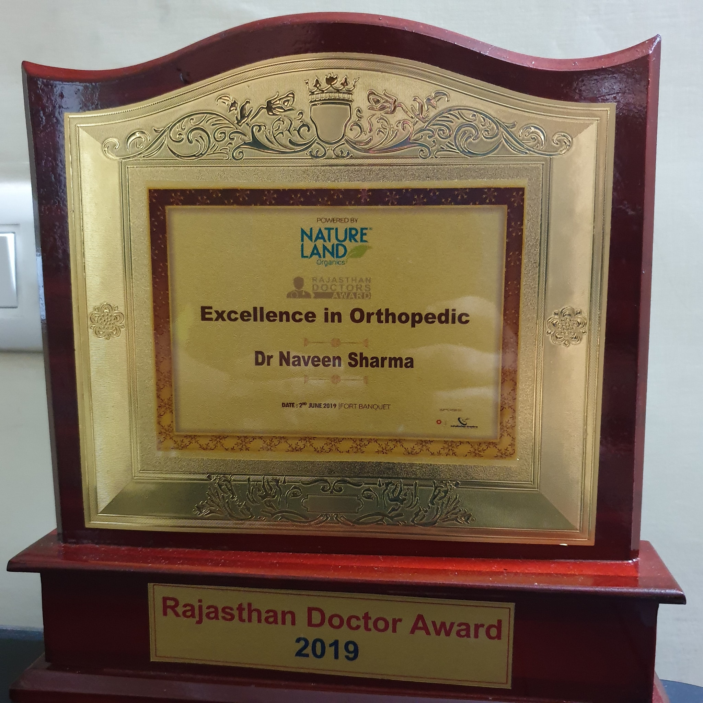
Highlighting groundbreaking orthopedic surgeries and patient recoveries at AOSIH Jaipur.
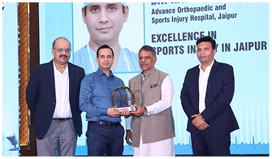
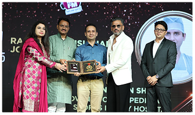
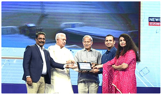
Read firsthand accounts from patients who regained pain-free mobility and resumed their careers, sports, and active daily lives at AOSIH.
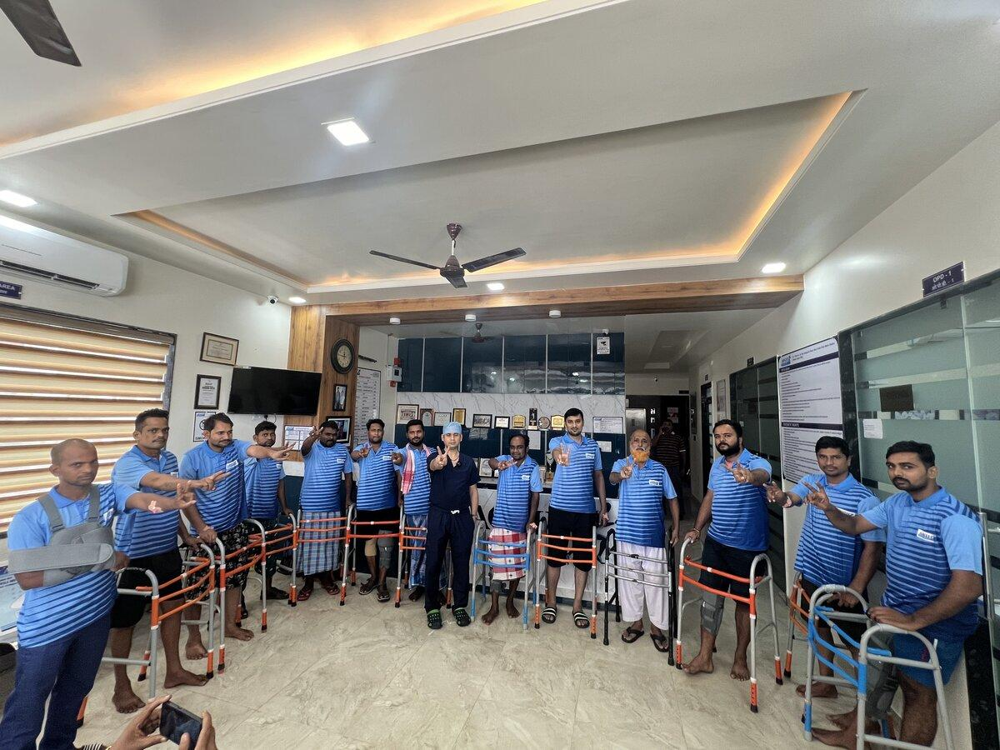
"I was suffering from severe arthritis for 6 years and could barely walk 10 steps. Dr. Naveen Sharma operated on both my knees at AOSIH using the subvastus technique. I walked the very next morning and climbed stairs within 10 days without any walker. My life has completely transformed!"
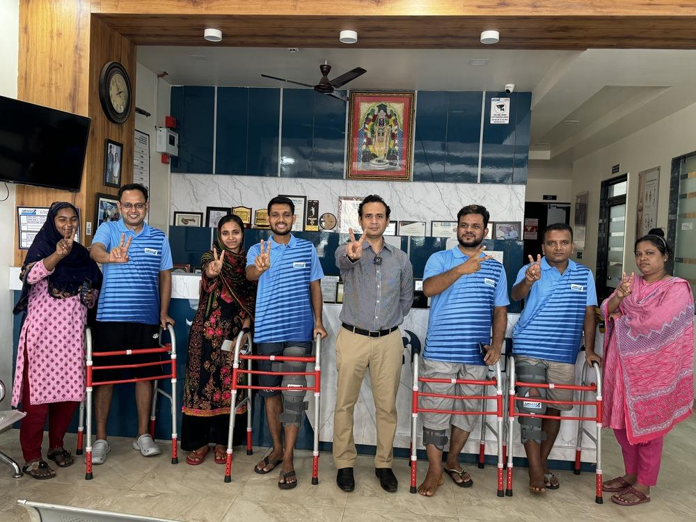
"My father was terrified of conventional hip replacement because of dislocation restrictions. Dr. Naveen Sharma performed DAA Hip surgery at AOSIH. My father was walking in the corridor within 4 hours post-surgery! No restrictions on sitting or sleeping. Absolutely miraculous."
"I tore my ACL playing cricket and lost all knee stability. Dr. Naveen performed anatomical ACL reconstruction with peroneus autograft and meniscus repair. The hospital physiotherapy team guided my rehab every week. At 6 months, I was back to running 5 km and playing badminton!"
We provide seamless cashless claim processing with all major health insurance companies and TPAs, ensuring zero out-of-pocket stress for your family.
Clear, factual answers to common questions about joint surgery, hospital admission, recovery times, and outstation patient concierge.
Schedule an in-person consultation with Dr. Naveen Sharma at AOSIH Jaipur or request a rapid digital second opinion for outstation patients.